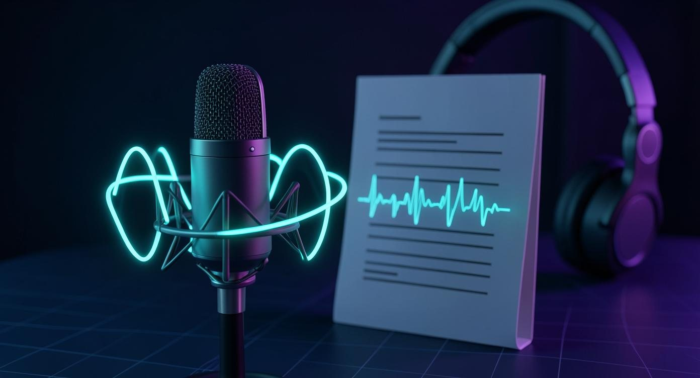
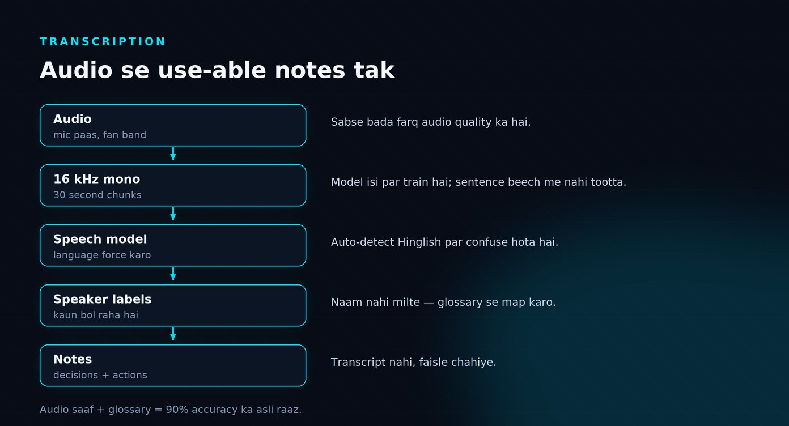
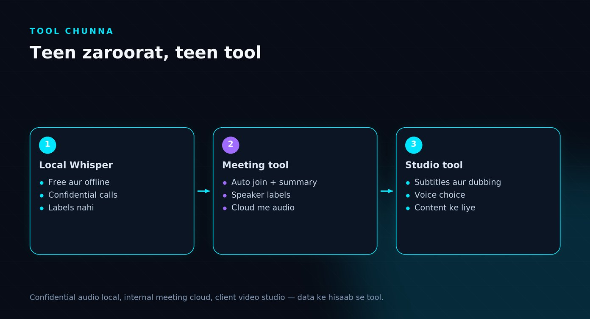

AI Voice aur Transcription Tools: Practical Hindi Guide

Ek 45 minute ki client call ke baad notes likhna woh kaam hai jo koi nahi karna chahta. Pehle main call ke dauraan likhta tha aur aadhi baat miss kar deta tha; phir recording sun kar likhta tha aur 90 minute lagte the. Aaj wahi kaam ek transcription tool 3 minute me kar deta hai — par sirf tab, jab maine use theek se set kiya ho. Bina set kiye woh “Hinglish” ko aisi Angrezi me badal deta hai jo kisi ne boli hi nahi.
Is guide me AI voice tools ka poora practical side hai: transcription andar se kaise kaam karta hai, tool kaise chunein, Hindi aur Hinglish me accuracy kaise badhayein, meeting notes ka workflow, subtitles, text-to-speech aur dubbing, aur privacy ke woh sawaal jo office recording ke saath zaroori ho jate hain. Saath me apne do anubhav bhi, jinme ek me maine client ki recording galat jagah upload kar di thi.
Chhota jawab: Voice AI ke teen kaam hain — speech to text (transcription), text to speech (voice generation) aur translation/dubbing. Transcription ke liye Whisper family ka model sabse aam hai; meeting notes ke liye tool ke saath speaker labels aur summary chahiye; dubbing ke liye voice cloning ka consent zaroori hai. Har case me 80% quality tool se aati hai aur 20% aapke audio aur glossary se — isliye recording saaf karna aur naam pehle se list karna sabse bada shortcut hai.
Voice AI ke teen alag kaam
“AI voice” ek cheez nahi hai, teen hain, aur inke tools alag hain. Pehla — speech to text: audio ko text me badalna. Isme meeting notes, interviews, podcast transcripts aur subtitles aate hain. Doosra — text to speech: likhe hue text ko natural awaaz me badalna. Isme voiceover, audiobook aur reels ki voice aati hai. Teesra — translation aur dubbing: ek bhasha ki awaaz ko doosri bhasha me, awaaz ke character ke saath badalna.
Teeno ka business case alag hai, isliye tool bhi alag chuno. Jo tool meeting notes me best hai woh dubbing me nahi chalta, aur jo voice cloning me best hai woh 10 ghante ki recording transcribe karne me mehnga padta hai. Pehle apna kaam tay karo, phir tool.
Ek chautha kaam bhi hai jo aaj kal tez badh raha hai — voice agents, yani phone par baat karne wale bots. Woh is guide ke bahar hai, kyunki usme latency, telephony aur turn-taking ka poora alag engineering hai. Yahan hum recording se text, text se awaaz, aur unke practical use par rahenge.
Transcription andar se kaise kaam karta hai
Modern transcription models (Whisper family sabse aam hai) audio ko chhote tukdon me baant kar unhe text me badalte hain. Do cheezein isme important hain. Pehli — audio quality. Model background noise, echo aur door ki awaaz par turant kamzor hota hai. Doosri — context. Model ko pehle se pata nahi hota ki “Sundar” naam hai ya “sundar” adjective, isliye woh spelling apne hisaab se chunta hai.

Meeting tools iske upar do cheezein jodte hain: diarization (kaun bol raha hai) aur summary (kya decide hua). Diarization aksar “Speaker 1 / Speaker 2” deta hai — naam nahi. Summary LLM se banti hai, isliye woh transcript par depend karti hai: agar transcript me numbers galat hain, summary me bhi galat jayenge. Yeh chain samajhna zaroori hai, kyunki log summary ko sach maan lete hain.
Ek technical baat jo kaam aati hai: audio ko 16 kHz mono me convert karna. Zyadatar models isi par train hain, aur stereo 48 kHz file dene se quality nahi badhti — bas file badi hoti hai aur processing slow. `ffmpeg -i input.mp3 -ar 16000 -ac 1 out.wav` — yeh ek line 20% speed bacha deti hai.
Tool chunna — kaam ke hisaab se
Market me 50 tools hain, par unhe teen categories me baantna kaafi hai. Faisla teen sawaalon se hota hai: kitna audio, kaun si bhasha, aur data kahan ja sakta hai.

Local Whisper (open-source, apne laptop par) — free, private aur offline. 1 ghante ki recording laptop par 5–15 minute me transcribe ho jati hai, model ke size par depend. Meeting notes ke liye speaker labels nahi milte, par privacy sabse zyada. Client ke confidential calls ke liye main yahi use karta hoon.
Meeting tools (Otter, Fireflies, Google Meet ke built-in notes) — Zoom/Meet se seedha join karte hain, speaker labels dete hain, summary aur action items banate hain. Sabse aasan, par audio cloud me jata hai aur free plan me minute limit hoti hai.
Studio tools — subtitles ke liye (Descript, Kapwing) aur dubbing/TTS ke liye (ElevenLabs aur similar). Inme editing, voice choice aur timing control milta hai. Yeh content creation ke liye hain, meeting notes ke liye nahi.
Mera practical mix: confidential kaam local Whisper par, internal meetings meeting tool par, aur client-facing video/subtitles studio tool par. Teen jagah teen tarah ka data, aur har jagah woh policy jo us data ke liye theek hai.
Hindi aur Hinglish me accuracy kaise badhayein
Hindi transcription English se mushkil hai, aur Hinglish usse bhi. Wajah simple hai — code-switching. Ek hi sentence me “meeting kal 4 baje hai” aata hai, aur model ko har baar faisla karna padta hai ki “meeting” ko Devanagari me likhe ya Latin me. Isliye output me consistency nahi aati: kabhi “मीटिंग”, kabhi “meeting”, kabhi “mitin”.
Accuracy badhane ke paanch practical tarike hain, aur maine sab try kiye hain:
- Audio saaf karo. Fan band karo, mic muh ke paas rakho, aur echo wale kamre se bacho. Yeh sabse bada farq hai — 10% se 20% tak.
- Bhasha force karo. Whisper me `language="hi"` set karo. Auto-detect Hinglish par confuse hota hai aur kabhi English me transcribe kar deta hai.
- Prompt me naam do. Whisper ka `initial_prompt` me company ke naam, product ke naam aur logon ke naam likh do. Model unhe sahi spell karta hai.
- 30 second chunk. Whisper 30 second ke window par kaam karta hai. Lambi file me silence par cut karo, warna sentence beech me toot jata hai.
- Glossary rakho. Har project ke liye 20–30 terms ki list, aur transcript par search-replace. “Kubernetes” ko “cooper netis” likha jana aam hai.
Ek chhoti si trick aur — do pass me chalao. Pehle Hindi me transcribe karo, phir usi text ko LLM se clean-up karwao: “is transcript me spelling theek karo, filler words hatao, par kuch jodo mat.” Yeh clean-up readability bahut badha deta hai. Par rule yeh hai ki clean-up ke baad numbers haath se check karo — model “5 lakh” ko “50 lakh” kar sakta hai, aur meeting notes me yeh mehnga ho sakta hai.
Meeting notes ka workflow
Transcription ka kaam transcript dena hai. Note ka kaam yeh batana hai ki kya decide hua aur kaun kya karega. In dono me farq hai, aur zyadatar log pehle par ruk jate hain. Mera workflow chaar step ka hai.
1. Recording se pehle bolo. Meeting ke shuru me saaf keh do ki recording ho rahi hai aur notes AI se banenge. Yeh legal requirement bhi hai aur trust ka sawaal bhi. India me recording ke consent ke rules alag-alag context me alag hain, isliye “sab log theek hain?” poochhna aadat bana lo.
2. Transcript par summary mat banao — pehle structure do. LLM ko transcript ke saath yeh template do: “Decisions, Action items (owner + date), Open questions, Numbers mentioned.” Bina structure ke summary dhundhla aata hai.
3. Action items verify karo. Har action item ka owner aur date transcript me hai ya nahi, check karo. Model kabhi kabhi “team” ko owner bana deta hai, jo action item nahi hota.
4. 5 line ka email bhejo. Poora transcript attach karo, par email me sirf 5 line — kya decide hua, kya karna hai, kisne, kab tak. Log 40 page transcript nahi padhte.
Is workflow se mera meeting ke baad ka kaam 40 minute se 6 minute par aa gaya. Sabse zyada time ab bhi step 3 me jata hai, aur wahi sahi jagah hai — kyunki galat action item ka nuksan transcript ke galat word se zyada hota hai.
Subtitles, captions aur video ke liye
Video ke liye transcription ka output seedha use nahi hota. Subtitles me do cheezein chahiye jo transcript me nahi hoti: timing aur line length. Ek subtitle 42 characters se lamba nahi hona chahiye aur 1–6 second tak screen par rehna chahiye — warna mobile par padhna mushkil hota hai. Zyadatar tools SRT file dete hain, jise aap video editor me import kar sakte hain.
Auto-generated subtitles ko “word-level timing” wale tool se banwayein. Woh har shabd ka time deta hai, isliye line breaks sahi jagah aate hain. Phir bhi 10–15% jagah haath se theek karna padta hai — khaas kar naam, numbers aur English-Hindi mix wale hisson me.
Ek practical tip: subtitles ko transcript ki tarah mat likho. Boli hui baat me repetition hoti hai (“matlab, basically, you know”). Subtitles me woh hata do, warna viewer ki aankh thak jati hai. Aur Hindi subtitles me Devanagari vs Roman ka faisla audience se karo — Instagram par Roman Hinglish zyada padhi jati hai, YouTube par Devanagari better chalti hai.
Text-to-speech aur dubbing — power aur zimmedari
TTS aaj itna natural hai ki farq mushkil se pata chalta hai. Iska fayda content creators ko hai: script likho, voice chuno, aur 10 minute me voiceover tayyar. Audiobook, course module, reels — sab me kaam aata hai. Par do cheezein dhyan me rakho.
Pehli — pronunciation. Hindi ke saath English words, brand names aur numbers par TTS aksar galat padhta hai. Har tool me “pronunciation dictionary” hoti hai; usme apne 20 common words daal do (jaise “API” ko “ay-pee-eye” nahi, “A-P-I” padhna hai). Yeh 5 minute ka kaam poore project ki quality badal deta hai.
Doosri — consent. Kisi ki awaaz ki nakal (voice cloning) bina permission ke banana galat bhi hai aur kai jagah illegal bhi. Apni awaaz, ya likhit permission wali awaaz — bas wahi. Dubbing ke liye bhi: original speaker ki permission ke bina uski awaaz doosri bhasha me daalna risk hai, chahe content aapka ho.
Dubbing ka workflow simple hai par mehnat maangta hai: transcript banao, translate karo (meaning ke saath, shabd-ba-shabd nahi), phir timing match karo. 10 minute ke video ki dubbing me 2–3 ghante lagte hain, jisme 80% time lip-sync aur timing ka hota hai. AI pehla draft deta hai, final polish insaan karta hai.
Privacy, cost aur limits
Meeting recordings me sabse zyada sensitive data hota hai — pricing, layoffs, client ke numbers. Isliye teen sawaal har tool se pehle poochho: audio kahan store hota hai, kitne din rehta hai, aur kya woh training ke liye use hota hai? Zyadatar paid plans me “training nahi” ka option hota hai; free plans me aksar nahi hota.
Cost ka hisaab simple hai. Local Whisper free hai, par laptop ka time lagta hai. Hosted transcription aam taur par per minute charge karti hai — 1 ghante ka audio kuch rupaye se kuch dollar tak, model aur tool par depend. Meeting tools per seat charge karte hain, jo 5 logon ki team par mahine ka fixed kharcha ban jata hai. Pehle mahine apna actual volume naapo, phir plan chuno — 90% log apne use se bada plan le lete hain.
Limits bhi jaan lo: hosted tools ki file size limit (aksar 2 GB), duration limit (kuch me 2 ghante), aur language support. Hindi ke liye model support check karo — sab tools Devanagari output nahi dete, kuch sirf Roman Hinglish dete hain.
Mera anubhav
Ek baar maine ek client ki 2 ghante ki discovery call transcribe ki. Audio me network ki dikkat thi, isliye maine usse ek free online tool par upload kar diya — bina soche ki usme pricing aur unke andar ke numbers the. Tool ne kaam kar diya, par agle din mujhe yaad aaya ki free plan ka matlab yeh bhi ho sakta hai ki audio unke system me rehta hai. Maine turant delete kiya aur client ko bataya. Kuch nahi hua, par us din ke baad maine rule bana liya: client ka audio sirf local Whisper par. Ab woh 12 minute lagta hai, par neend achhi aati hai.
Doosri sikh accuracy ki thi. Main sochta tha Hindi transcription “kaafi theek” hai jab tak ek transcript padha jisme “GST” ko “जी एस टी” aur “invoice” ko “इनवॉइस” likha tha — technically sahi, par use karna mushkil. Phir maine `language="hi"` ke saath `initial_prompt` me company ke 15 naam daale. Wahi audio, wahi model, par readability kaafi behtar. Uske baad har project me main pehle 10 minute glossary banata hoon, phir transcribe karta hoon. Woh 10 minute poore project ka sabse achha invest nikla.
Nateeja
Voice AI ke teen kaam hain — transcription, TTS aur dubbing — aur har ek ka tool alag hai. Transcription ki quality audio aur glossary se banti hai, sirf model se nahi. Hindi/Hinglish me language force karo, naam prompt me do, aur 30 second chunks me kaam karo. Meeting notes ke liye structure do, action items verify karo, aur 5 line ka email bhejo. TTS aur dubbing me pronunciation dictionary aur consent — dono zaroori hain. Aur privacy: confidential audio local rakho.
Aaj shuru karna ho to ek 5 minute ki recording lo, usse local Whisper se transcribe karo, aur output me apne 10 common galat words dhoondho. Woh list aapki glossary hai — aur wahi list agli baar 90% mehnat bacha degi.
Aage padhein: shorts workflow — transcript se captions tak ka raasta; aur AI automation guide — meeting notes se action items seedha task tool me bhejne ka tarika.
अक्सर पूछे जाने वाले सवाल
Hindi transcription ke liye kaun sa tool best hai?
Whisper family ke models Hindi me sabse consistent hain, khaas kar `language="hi"` set karne par. Meeting tools aasan hain par unki Hindi quality tool ke hisaab se badalti hai — apni recording par test karein.
Hinglish transcript me consistency kaise laayein?
Language force karein, glossary banayein aur transcript par clean-up pass chalaayein. Devanagari ya Roman — ek script tay karein aur usi me output maangein.
Meeting record karne se pehle kya batana chahiye?
Saaf batao ki recording ho rahi hai aur AI notes banayenge, aur sabki permission lo. Company ki policy aur local rules bhi check karein.
Kya AI voice se apni awaaz clone kar sakte hain?
Apni awaaz haan, tool ke terms ke andar. Kisi doosre ki awaaz sirf likhit permission ke saath — bina consent cloning galat aur kai jagah illegal hai.
Free me transcription kaise karein?
Local Whisper open-source hai aur free chalta hai; laptop par 1 ghante ka audio 5–15 minute me. Hosted free plans me minute limit aur privacy trade-off hota hai.